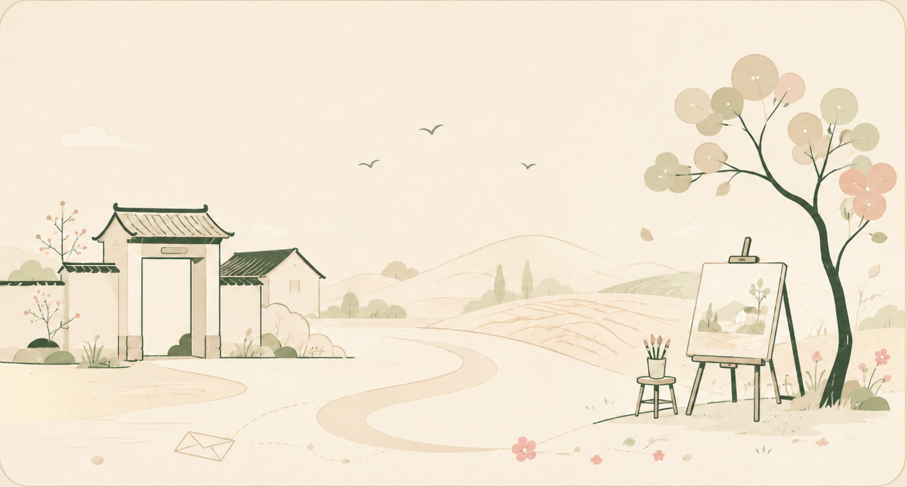

“把美种进乡野与心田”
文艺小院
是山艺青年走进基层的流动美育课堂
每一次驻足，每一次交流
都让美从书本走入街巷
让艺术有温度
让陪伴有回响
小院故事 · 时光足迹
临沂平邑
为进一步深化落实文艺志愿服务，以艺术赋能乡村振兴，2025年7月7日，第一所“文艺小院”在临沂市平邑县揭牌，标志着文艺助力乡村振兴的“最后一公里”正式打通。未来，这座小院将常驻艺术家、常开创作课、常办展览秀，让文艺的种子在乡土间生根发芽，结出物质与精神“双丰收”的硕果。
菏泽定陶
菏泽市定陶区作为我校定点帮扶区，对优质文艺资源下沉、基层艺术人才培训和常态化文化惠民活动有着迫切需求，我们将发挥文艺小院的“前哨站”和“孵化器”作用，通过定期派驻师生、开设公益课堂、挖掘地方特色非遗项目，达到“培育一支带不走的文艺队伍、打造一批本土化精品节目、形成一股长效文化造血机制”的实效，真正让文艺帮扶从“送文化”转向“种文化”。
长清双泉
2026年4月1日，第三所“文艺小院”落地长清区双泉镇。双方围绕艺术支教、社团共建美育提质等展开深入交流，表示将立足校地资源，以专业优势赋能乡村教育，共筑乡村美育实践新阵地，让艺术滋养青少年成长成才。下一步，校团委将以党建带团建、青马带青年为引领，协助学校开设舞蹈、书法、话剧、戏曲等特色社团课程，把优质艺术资源下沉一线，让文艺小院成为美育育人的温暖港湾。
山东省青少年宫
山东省青少年宫作为全省青少年校外教育的重要阵地，山东艺术学院作为省内艺术人才培养与创作的重要高地，双方将秉持“资源共享、优势互补、协同育人”的原则，建立长期战略合作关系。未来，双方将在美育课程开发、文艺志愿服务、非遗文化传承、艺术社团共建等方面开展深度合作，搭建实践育人平台，推动艺术教育资源向青少年延伸，让更多山艺青年在服务一线中长本领、作贡献、亮青春。
长清大学城实验学校
作为双方深化合作的重要实践成果，该小院将依托高校艺术资源与校外教育阵地，持续开展美育课程开发、文艺志愿服务、非遗文化传承及艺术社团共建等活动，为大学城师生打造“沉浸式”艺术体验空间。未来，双方将以文艺小院为纽带，进一步推动艺术教育下沉，让青少年在校门口感受艺术之美，助力校园美育高质量发展。
小院时光 · 沉浸呼吸
【翻阅】师生回忆相册
1 / 102公众号原文 · 美育回看
从乡村到学校，从社区到街巷
文艺小院的脚步从未停歇
我们在田埂旁教孩子调出第一抹色彩
在课桌前与少年共谱第一段旋律
在社区活动中心陪银发长者剪出窗花里的故事
每一次俯身，都是艺术与生活的对话
每一次牵手，都是青春与童真的相拥
我们不做高高在上的“送文化”
而是扎根泥土的“种文化”
让美在寻常巷陌生根
让爱在服务一线发光
这就是我们的小院
也是我们的青春答卷。
弹窗内滚动查看全部公众号原文